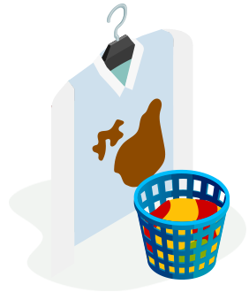

Zavolejte:
+420 732 123 456
nebo použijte
Objednávkový formulář
Naše ceny

Vy objednáte
on-line na počítači nebo vašem na mobilu
Webová stránka a její mobilní verze je tak jednoduchá, že to můžete klidně svěřit svému pětiletému synovi. Další objednávky můžete pak zadávat i po telefonu. Stačí mít jasno.

My vyzvedneme
u vás v kanceláři nebo doma
Ve vybraný den si vyzvedneme věci k vyčištění ve Vaší kanceláři nebo přímo u vás doma podle preferovaného termínu. A kdybyste to nestíhali, můžete se domluvit a nechat vše připravené třeba u Vás na recepci. My už si s tím nějak poradíme.

Vyčistíme
během 48 hodin
Není umění něco slíbit. Umění je slib dodržet. A v takové kvalitě, za kterou si budeme stát. Proto si s námi můžete být jisti, že čistíme nejen s respektem k Vašim věcem, ale zároveň s respektem k životnímu prostředí.

Doručíme zpět
do pohodlí Vaší kanceláře nebo domova
Vámi zvolený termín dodání si bereme osobně, proto pokud se nám, z jakéhokoli důvodu, nepodaří doručit Vaši objednávku včas, nemusíte se obtěžovat vytahovat peněženku.
Často kladené dotazy
To hlavní
Naše služby můžete objednat téměř v celé Praze. Fungujeme v pracovní dny od 7:00 do 21:00 (podle
obsazenosti
jednotlivých dvouhodinových časových slotů).
Jestli jezdíme na Vaši adresu si můžete jednoduše ověřit na
hlavní stránce podle PSČ.
U každé objednávky si můžete vybrat volný časový úsek (slot) pro svoz a zpětné doručení oblečení.
Ne, to není. Můžete objednat klidně jen 1 položku k čištění. Minimální částka objednávky je ale vždy 300
Kč.
Pokud potřebujete nutně vyčistit něco i za menší částku (např. jednu nebo dvě košile), máte možnost ponechat
automatický dopočet do 300 Kč a objednat i tak.
Kdy a jak se platí…
Platba probíhá jako v každé klasické čistírně nejčastěji při převzetí věcí k čištění. Pokud není již při
svozu
jasná přesná částka a rozsah čištění, můžeme se dohodnout na platbě při zpětném doručení.
Platit můžete
platební kartou našemu Stewardovi nebo on-line rovnou při objednávce. Rozhodli jsme se fungovat
bez hotovosti, takže tu bohužel Steward převzít nemůže.
Máme vlastní svozové tašky a vaky, ale "popereme se" s jakoukoliv vaší tašku (viz níže sekce První objednávka). Při rozvozu vyčištěného oblečení od nás dostane vše zabalené v ochranné fólii.
Čistíme všechno, co najdete na našich stránkách. Pokud ale nenajdete přesně to, co potřebujete vyčistit - napište nám. Zjistíme jestli a jak lze váš požadavek řešit a ozveme se vám zpět.
První objednávka
Stačí, pokud si věci k čištění nachystáte do jakékoliv tašky. Oděvy předávané k čištění na ramínku můžete
předat na kovových ramínkách z čistírny, pokud je máte doma - celý proces předání se tím urychlí.
Náš
LaundryJet Steward následně umístí oblečení do vlastních svozových tašek nebo vaků. V případě, že budete
chtít vaši tašku (nebo ramínka) vrátit zpět, Steward vám je vrátí ihned na místě.
Fungujeme téměř po celé Praze. Zda jezdíme na Vaši konkrétní adresu si můžete snadno ověřit na hlavní stránce podle PSČ.
Typická doba vyčištění je 48 hodin. Čas svozu i doručení si můžete sami řídit při zadávání objednávky. U některých speciálních oděvů či materiálů (typicky péřové oděvy nebo komplikovanější večerní šaty) se může doba prodloužit - budeme Vás o tom informovat ihned po detailním příjmu zakázky v našem provozu.
Aktuálně umožňujeme objednávky online (funguje to pěkně i z mobilního telefonu). Pro možnost telefonické objednávky je potřeba provést aspoň jednu objednávku po internetu a pak už stačí jen zvednout telefon a diktovat :)
Nic se neděje, nejlépe bude když nám zavoláte na 840 100 240 a nějaké řešení spolu najdeme.
Pro čištění využíváme moderní stroje a postupy, tak abychom zajistili, co nejlepší kvalitu vyčištění oděvů. Oblečení čistíme v provozech orientovaných na kvalitu, s dlouholetou tradicí a zkušeným personálem.
Tak tohle je něco, co se i nám stává často, proto můžete kdykoliv před svozem oblečení zavolat na naši zákaznickou podporu 840 100 240 a doplnit objednávku po telefonu. V krajním případě lze řešit doplnění objednávky i s naším Stewardem, ale počítejte, že to zabere trochu času.
Svoz a doručení zpět
Čas svozu oblečení k vyčištění i čas doručení již vyčištěných oděvů si sami zvolíte při objednávce. Jedná se o dvouhodinové úseky (např. 15:00 - 17:00), ve kterých za vámi přijedeme.
Nic. ... Opravdu "nula Kč". Cena dopravy je již započítaná v ceně čištění.
Pokud potřebujete udělat takovouto změnu, dejte nám vědět alespoň 2 hodiny před termínem svozu a společně to vyřešíme (840 100 240).
Časové úseky pro svoz a zpětné doručení jsou nastavené tak, abychom byli i ve špičkách schopni dodržet vámi vybrané hodiny. Prostě neslibujeme, co bychom nemohli třeba jen trochu splnit.
Naším cílem je dodržovat vše, co slíbíme. Pokud se přesto zpozdíme, poskytneme vám buď odpovídající slevu nebo se ani nebudete muset obtěžovat s vytahováním peněženky a zakázka pro vás bude zdarma.
Čištění
I když pracujeme s moderními stroji a používáme prověřené přípravky na čištění, může se stát, že na některé skvrny budeme přesto krátcí. Uděláme maximum proto, abychom oděv co nejlépe vyčistili a zároveň zabránili jeho poškození, ale garantovat odstranění úplně každé skvrny bohužel nemůžeme.
Ano, samozřejmě. Všechny položky, které nabízíme k čištění, zároveň žehlíme. Víme, co to je třeba žehlení košil. A v tom vás rozhodně nechat nehodláme ;-)
Při čištění používáme moderní profesionální stroje, ale i postupy. V některých věcech není spěch to pravé ořechové a čištění oděvů k nim patří. Nenabízíme proto super-rychlé čištění, ale sázíme na prověřené postupy a dlouholeté zkušenosti personálu čistírny.
Tuto možnost připravujeme do budoucna. Víme, že speciální čištění není jen to, že „přepneme“ na „soft-care“ program, a proto chceme nabídnout smysluplné řešení, které opravdu bude čistit šetrně přesně podle toho, jak potřebujete.
Abychom vám vrátili vždy vše správně a včas, potřebujeme mít nastavený systém pro sledování jednotlivých položek k čištění. Tyto štítky nám pomáhají, aby pro vás bylo vše připraveno tak, jak má být.
Stát se může všechno, spojte se s námi na zákaznické lince 840 100 240 a věc spolu vyřešíme. V LaundryJet jsme pojištěni pro případ, kdy takováto situace nastane.
Platba
Buď ihned při objednávce platební kartou ON-LINE na webu nebo OSOBNĚ při schůzce s naším Stewardem.
I v
tomto případě pouze platební kartou (samozřejmě také bezkontaktně). Hotovost neplánujeme – je to pro nás tak
trochu stará škola, zároveň je to bezpečnější a také nemáme „jiné“ důvody proč hotovost preferovat.
Kartou platíte předem na internetu (zabezpečeně přes GoPay) nebo osobně při setkání s naším Stewardem (má u sebe mobilní platební terminál).
Při akceptaci platebních karet spolupracujeme s renomovanými partnery ČSOB a GoPay. Jejich řešení splňují moderní standardy zabezpečení a my údaje o vaší platební kartě nijak nezpracováváme a k datům o platebních kartách nemáme sami vůbec přístup.
Ano. Přihlaste se na našich stránkách www..cz a podívejte se do sekce „Můj účet“.